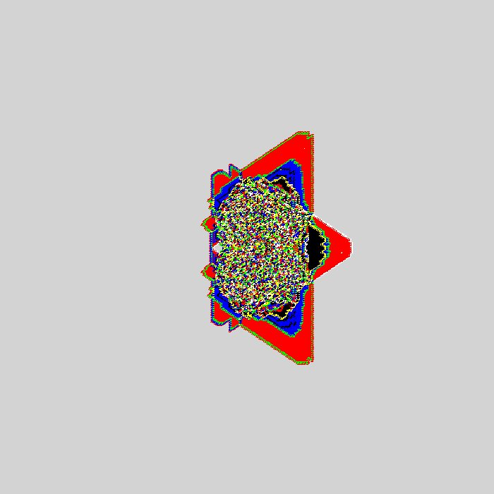
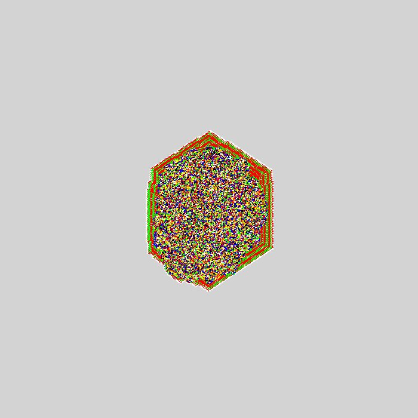
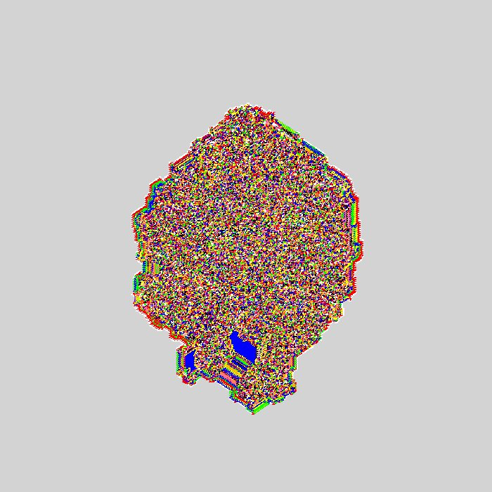
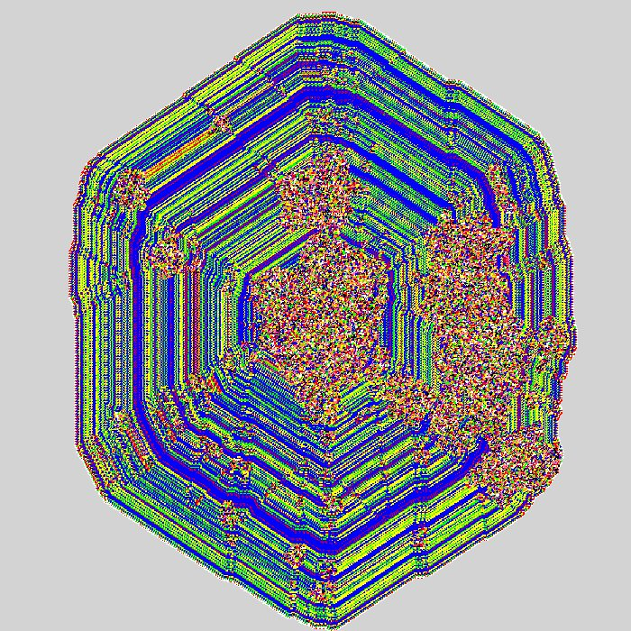
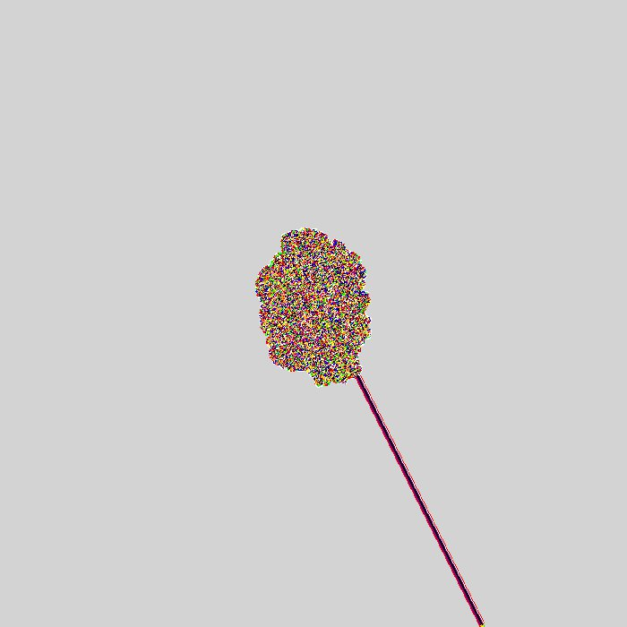
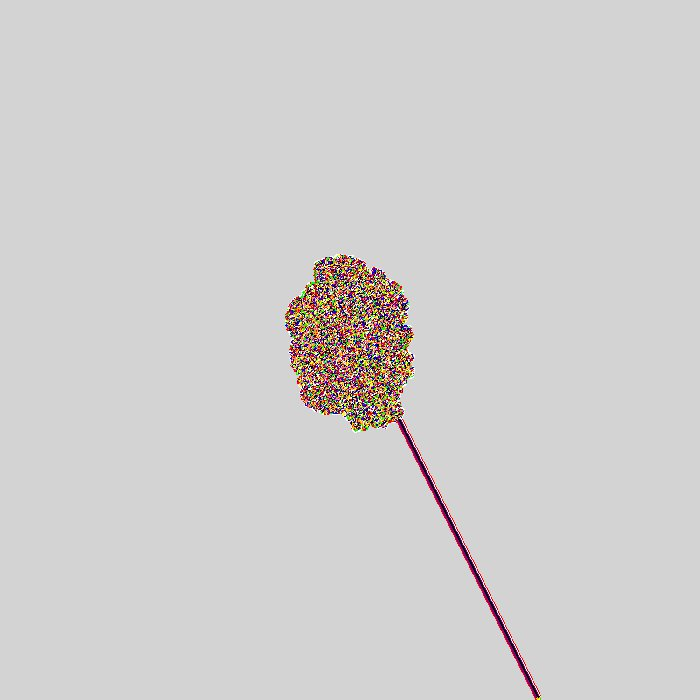

homepage
coding shit
I have always found cellular automata cool, from wolframs elementary ca to conways game of life.
here is a small exploration of langtons ant.
last updated: 12/11/25
Langton's Ant
The original Langtons ant is a simple 2d cellular automata where the grid can be colour 0 or 1 and the ant (the only active thing) follows these 2 rules:
if the current cell is 0, change it to 1, rotate (-)90 degrees left and move forward.
if the current cell is 1, change it to 0, rotate (+)90 degrees right and move forward.
This is the first 11,500 steps the ant will take. After 11,000ish it begins to forming a repeating pattern (or a highway) which will continue indefintely. I realise now i mixed my left and rights up so this is "upside down" :).
it is not hard to make variations to Langtons Ant by adding more options for cell values (more colours) and more rules.
on the left I have the rules: {0-->1,+90, 1-->3,+90, 2-->0,-90, 3-->2,-90} and on the right: {0-->3,+90, 1-->0,+90, 2-->1,-90, 3-->4,-90,4-->2,+90}.
these first few are made using matplotlib so the colours are harder to customise, so i will look to do the rest in pygame.
i have seen videos online where people have found awesome patterns just by modifying the number of colours and the rules. this video shows some awesome ones with 16 rules.
other modifications i have seen are multiple ants at once and a 3d version, which both make the system much more complicated.
i tried something i had not seen before and converted to grid made up of equilateral triangles. this was satisfying to code up.
i also made the grpahics better, so grey cells are untouched cells but for the ant they are treated the same as white.
above are the standard 2-state ant on a triangular grid. the result was suprising, i was expecting a cycle to form like the square grid but after 100 million steps it still didnt happen.
the end result looks extremely symmetrical, a few differences can be seen in the central chaotic cluster, looking at the starting video it is clealy not symmetrical.
because of these slight differences i thought it would eventually become asymmetric but i didnt see that happen after 100 million steps.
i am going to make and run a modfied ant program without animation that tracks the proportion of white to black and see if it stabilises in a reasonable number of steps (as reasonable as my laptop can handle).


these the results from said trial. the limiting factor is the grid size, my laptop cannot handle grid above 2500*5000 (the shape has to be like this to tile the full plane with the triangular grid style i used).
while this is not indicative of a highway as i initially hoped, the growing star pattern could be a sort of stable solution.
*note after the fact: perhaps it would have been faster to see if a repeating pattern like the original langton ant can even occur at all in a triangular grid. but im not sure how i would go about this either.
and even if it is possible to construct such a pattern, it is a different question to determine if the 2-state ant will ever reach it.
just for shits and giggles i ran the 2-state again with periodic boundaries to guarantee a break in the pattern. this was done ona 250x500 grid. yes i accidentally inverted the colour scheme.
ok wtf i ran this for 250 mil steps, there are multiple times in the simulation where a clear asymmetry is created. and yet the overall pattern stays so solid. even to the point these asymmetries get repaired.
the central chaos cluster appears to grow and shrink after the border has been reached. will this cluster eventually consume the entire grid? instinctually, i immediately think yes, it must, but this trianglular ant has made me wonder.
this work (without any real quantative analysis or proof) has led me to theorise that the 2-state langton ant on a non-periodic triangular grid will never form a highway.
moving on, now i am going to generalise my code by defining an ant by a sequence of L's and R's. so the original 2-state langton ant can be described as "RL" (or in my case above "LR").
so for some string S of L's and R's, for any cell state i, the ant changes it the state (i+1)%N, where N is the length of the string S. this allows for easier testing of more complicated rules.
my goal is to try and find a highway on the triangular grid. this is easier said then done, for any N there are 2N possible ants and most of them result in seeming randomness.
i looped through the positive numbers in binary and converted those to RL strings, then ran the ant >2.5 million steps. here are a bunch of my results.




 

so as far as i can see the ants form 4 general patterns.
1. 2-state-like patterns, these generally occur with a rule like "RLRLRL" (top left)
2. hexagonal patterns. not sure what makes these to occur but they come in 2 forms:
2a. layered hexagon pattern (bottom left)
2b. random hexagon (top middle), these do seem to have layers when being constructed but also get removed and replaced w randomness in construction.
3. fully random patterns, no obvious shape. these are by far the most frequent. generally completely random (bottom middle), occasionally have some order like middle left.
4. highway/stable patterns (bottom right), this is the only one i found so far :)
the apparent order in the random patterns could arise because of when the program was stopped. perhaps running another 1000 steps wouldve changed it to randomness.
of course by this same token of thought, there could be many highways which occur with simpler rules but require >10 million steps to begin.
overall im pre satisfied with what i produced here. i found a highway, which for a while there i wasnt even sure that was possible.
im gonna keep running the ants perhaps upto 1024 or even 2048 and will share any more interesting results i find.
in the future i might make a hexagonal grid ant. this would be the last of the regular n-gons which can tile the plane.
since the actual shape of the tile doesnt matter i could also look into pentagonal tilings which use identical irregular n-gons.
it will get a bit more difficult beyond hexagons because i don think you can tile the plane with an n-gon where n>6.